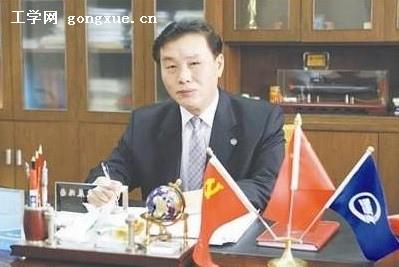

2012年中国企业家年会暨两江论坛日前表彰了116名2011-2012年度全国优秀企业家，我校78级校友杨志钢获此殊荣。
杨志钢，男，1958年出生，1978年就读于哈尔滨船舶工程学院，毕业后到武昌造船厂工作，现任武昌船舶重工有限责任公司董事长、总经理，武汉市第十一次党代表会、十二届人代会代表，湖北省科协常委，是我国国防科技工业有突出贡献的中青年专家、511人才工程高级管理人才，享受国务院政府特殊津贴，为国防建设、地区经济的发展做出了突出贡献。